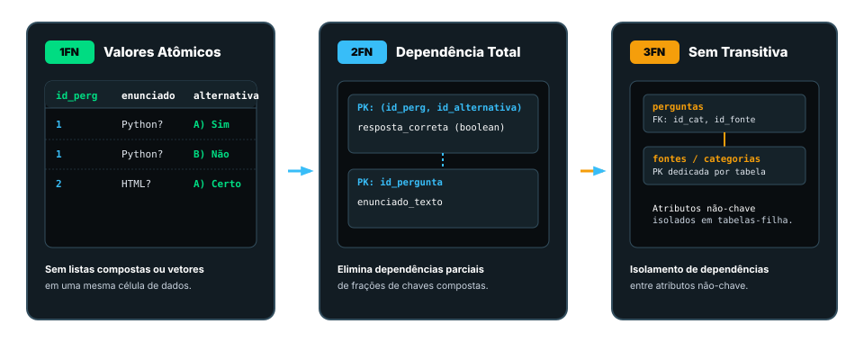

01
Dividir o misturado
1FN, 2FN e 3FN: Como organizar dados e evitar atualizar dezenas de linhas por uma única alteração.
Da 1FN à 5FN e o momento certo de desnormalizar: um guia prático com quiz, scripts PostgreSQL e vídeos complementares.
João Victor Guimarães Gomes, Matheus Augusto Antunes Pentogennis, Gustavo Gabriel Naves Ferreira, Lucas Siqueira Teles, Lucas da Graça Leandro e Gabriel Gonçalves Lima
Última revisão acadêmica: 16/10/2026Imagine guardar as perguntas de um quiz, as categorias, os nomes de quem publicou e as URLs das fontes tudo em uma única tabela. No início parece prático, mas com o crescimento da aplicação a duplicação causa erros graves de consistência. A normalização é a técnica essencial para estruturar dados em tabelas relacionais organizadas.
Organizamos esta investigação acadêmica em 3 etapas com conceitos, exemplos interativos e trechos de SQL:
1FN, 2FN e 3FN: Como organizar dados e evitar atualizar dezenas de linhas por uma única alteração.
BCNF, 4FN e 5FN: Descubra e elimine as redundâncias complexas que sobrevivem às formas tradicionais.
Desnormalização: Quando vale a pena duplicar dados de propósito para otimizar a velocidade de leitura.
Análise de um cenário com tabela única desnormalizada. Os dados da categoria e do publicador/fonte se repetem linha a linha:
| ID | Pergunta | Categoria | Publicador | URL Fictícia |
|---|---|---|---|---|
| 1 | Python é uma linguagem? | Programação | Portal Exemplo | https://exemplo.invalid/python |
| 2 | HTML estrutura páginas? | Desenvolvimento Web | Portal Exemplo | https://exemplo.invalid/html |
| 3 | SQL consulta dados? | Banco de Dados | Fonte Fictícia | https://exemplo.invalid/sql |
Em volumes maiores de dados, essa repetição causa três anomalias clássicas estudadas em banco de dados:
Alterar o nome do publicador em uma linha e esquecer em outra deixa o banco inconsistente.
Impossível cadastrar uma nova fonte sem associá-la imediatamente a uma pergunta válida.
Apagar a única pergunta de uma fonte remove involuntariamente os dados cadastrais da fonte.
Cada célula deve conter um valor único e indivisível. Não se deve armazenar conjuntos ou vetores na mesma célula (ex: "Certo; Errado" em um único campo). As alternativas foram movidas para uma tabela própria.
A tabela deve estar na 1FN e todos os atributos não-chave devem depender da totalidade da chave primária. Aplica-se a chaves compostas para evitar que colunas dependam de apenas parte da chave.
A tabela deve estar na 2FN e nenhum atributo não-chave pode depender de outro atributo não-chave. Isolamos as categorias e as fontes em tabelas próprias (`categorias` e `fontes`), mantendo na pergunta apenas a chave estrangeira.

Acompanhe a transição do modelo desnormalizado para o modelo relacional de forma didática.
Casos especiais onde a 3FN não elimina totalmente a duplicação: dependências funcionais de não-chaves e dependências multivaloradas.
Exige que todo determinante em uma dependência funcional seja uma chave candidata. Exemplo: Se um moderador gerencia apenas uma categoria (moderador → categoria), mas o moderador não é a chave da tabela, cria-se redundância:
| Jogador | Categoria | Moderador |
|---|---|---|
| Ana | Web | Marcos |
| Bia | Web | Marcos |
| Ana | Banco de Dados | Sílvia |
A solução BCNF decompõe em duas tabelas: moderador(moderador, categoria) e rodada(jogador, moderador).
Surgem quando um atributo determina um conjunto de valores independentes de outras colunas. Se uma pergunta tem 2 tags e 2 idiomas, a tabela desnormalizada exigiria 4 linhas (combinação cartesiana). Na 4FN, separamos em pergunta_tag e pergunta_idioma.
Indica que uma tabela só pode ser reconstruída sem perdas juntando três ou mais tabelas decompostas. É um cenário avançado focado em regras de negócio complexas.
BCNF: Para toda dependência não-trivial X → Y, X é superchave.
4FN: Para toda dependência multivalorada não-trivial X ↠ Y, X é superchave.
5FN: Toda dependência de junção é implicada pelas chaves candidatas do modelo.
Entenda visualmente as dependências multivaloradas e de junção.
A normalização foca na integridade do banco (OLTP). Contudo, sistemas analíticos e relatórios com milhões de dados exigem consultas mais rápidas. A desnormalização é a duplicação planejada e consciente de dados para evitar múltiplos JOINs pesados.
| Parâmetro | Sistemas OLTP (Transacional) | Sistemas OLAP (Analítico) |
|---|---|---|
| Objetivo | Gravação e edições rápidas sem erros | Consultas volumosas e relatórios |
| Modelagem | Normalizado (3FN / BCNF) | Desnormalizado (Esquema Estrela) |
| Custo Principal | Múltiplos JOINs em consultas | Consumo de armazenamento e sync |
Uma alternativa elegante no PostgreSQL é o uso de Visões Materializadas (Materialized Views):
CREATE MATERIALIZED VIEW resumo_categoria AS
SELECT c.nome AS categoria, COUNT(p.id_pergunta) AS total_perguntas
FROM categorias c
LEFT JOIN perguntas p ON p.id_categoria = c.id_categoria
GROUP BY c.id_categoria, c.nome;
-- Atualização sob demanda da visualização
REFRESH MATERIALIZED VIEW resumo_categoria;Veja os impactos de velocidade e consistência no modelo desnormalizado.
Trecho do script sql/normalizacao.sql com a criação das tabelas e relacionamentos:
CREATE TABLE categorias (
id_categoria INTEGER GENERATED BY DEFAULT AS IDENTITY PRIMARY KEY,
nome VARCHAR(80) NOT NULL UNIQUE
);
CREATE TABLE fontes (
id_fonte INTEGER GENERATED BY DEFAULT AS IDENTITY PRIMARY KEY,
nome VARCHAR(100) NOT NULL,
url VARCHAR(250) NOT NULL UNIQUE
);
CREATE TABLE perguntas (
id_pergunta INTEGER GENERATED BY DEFAULT AS IDENTITY PRIMARY KEY,
enunciado TEXT NOT NULL,
resposta_correta BOOLEAN NOT NULL,
id_categoria INTEGER NOT NULL REFERENCES categorias(id_categoria),
id_fonte INTEGER NOT NULL REFERENCES fontes(id_fonte)
);SELECT p.id_pergunta, p.enunciado, c.nome AS categoria,
f.nome AS fonte
FROM perguntas p
JOIN categorias c ON c.id_categoria = p.id_categoria
JOIN fontes f ON f.id_fonte = p.id_fonte
ORDER BY p.id_pergunta;